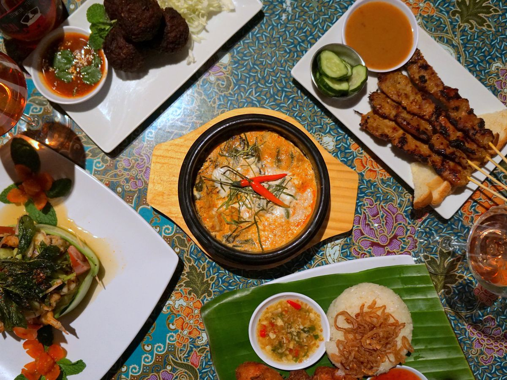

About Us
Locations
- Worcester, MA
- Boston, MA
- Lowell, MA
- Long Beach, CA
Origin Story
Worcester, MA
While Worcester Thai Town may be diminutive in size, only occupying a half-mile stretch in Park Avenue, its existence has been symbolic and influential in Thai culture on a much grander scale, locally and transnationally. As the first officially recognized Thai Town in the nation, and located in a city with the largest Thai population outside of Thailand, this designated area has grown into a hub of culture.